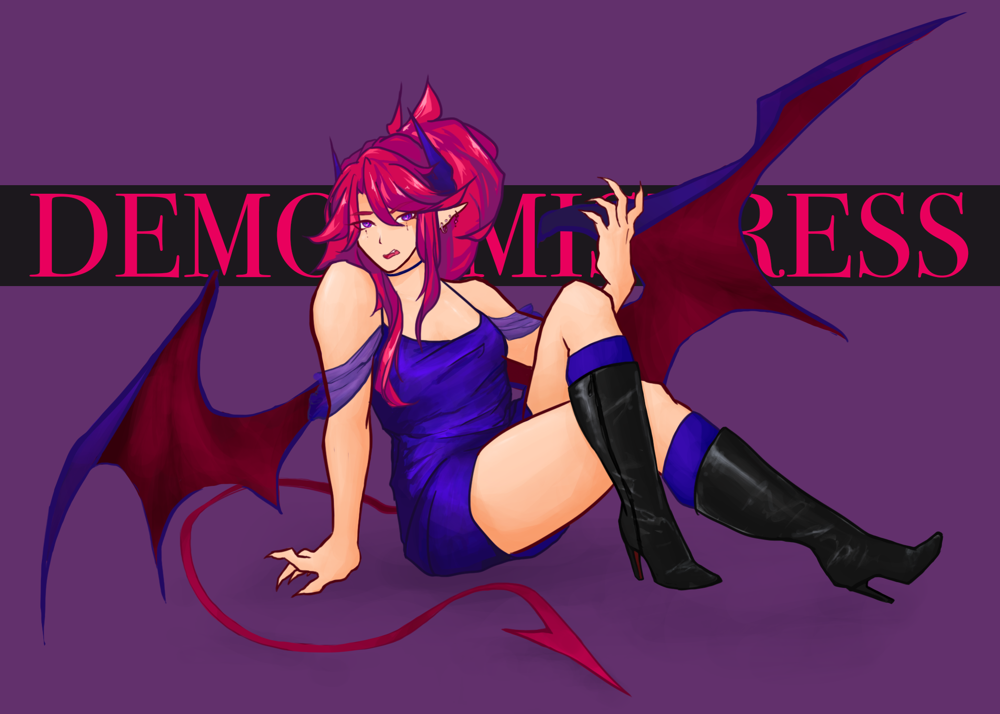

demon mistress
This was an illustration I made on my own time, but still technically fanart for Realm of the Mad God. I drew a pet skin, the Demon Mistress. For this piece, I was primarily focused on coloring the fabric to convey the texture/material. I looked at references of satin dresses and leather boots. I also really liked the vibrant color of her hair, so I incorporated the text as well.
Adobe Photoshop; January 2022